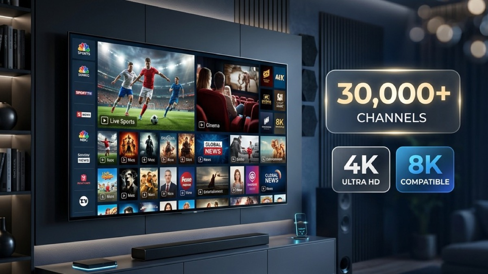
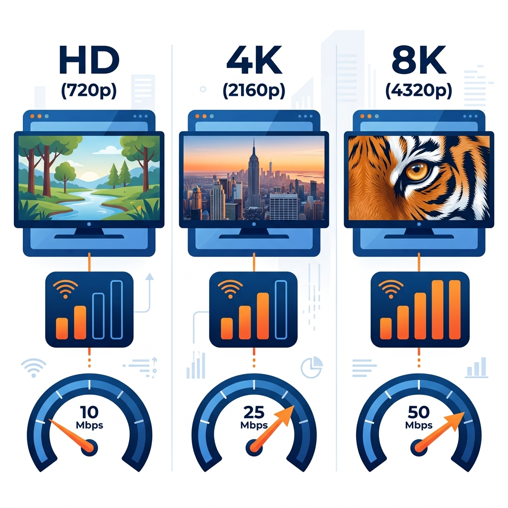
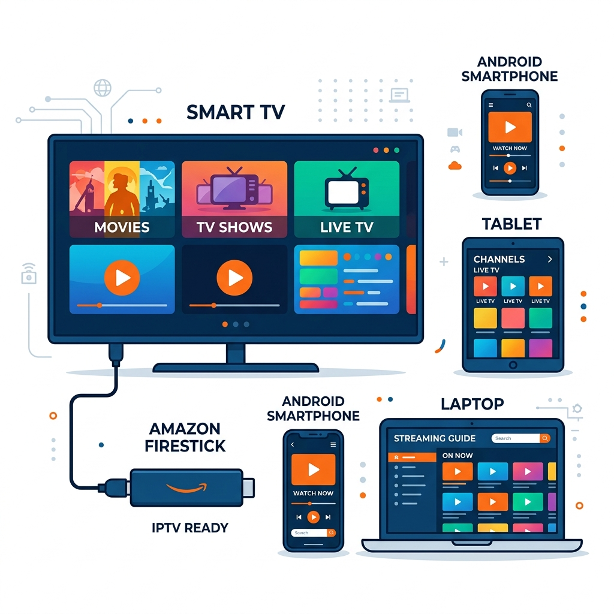

Le comparatif le plus complet pour trouver un service IPTV stable, testé en conditions réelles aux heures de pointe en France.

Distinguer un service IPTV stable d'une offre médiocre demande du temps et de l'expérience — c'est pourquoi nous avons testé plus de 50 fournisseurs pour ne garder que les 5 meilleurs.
| Service | Prix/an | Chaînes | Qualité max | Stabilité | Note |
|---|---|---|---|---|---|
| AuraPlay TV | Sur devis | 30 000+ | 4K | ⭐⭐⭐⭐⭐ | 5/5 🏆 Meilleur choix |
| IMIPTV | 49,99€/an | 21 000+ | UHD/FHD | ⭐⭐⭐⭐½ | 4.5/5 |
| Telecasta | 39,99€ | 30 000+ | 4K | ⭐⭐⭐⭐ | 4/5 |
| Atlas Pro ONTV | 42€ | 40 000+ | 8K | ⭐⭐⭐⭐ | 4/5 |
| Euro IPTV | 31,99€ | 40 000+ | 4K | ⭐⭐⭐½ | 3.5/5 |
AuraPlay TV est notre coup de cœur 2026 pour une raison simple : l'activation de votre abonnement IPTV est 100% automatisée via Telegram. Dès le paiement confirmé, le bot @AuraPlayTVBot vous envoie vos identifiants en quelques secondes — sans attente, sans intervention humaine, 24h/24 et 7j/7. Fini les emails qui tardent ou les supports indisponibles la nuit. Le service offre une stabilité de pointe avec plus de 30 000 chaînes en qualité 4K, compatible Smart TV, Firestick, Android, iOS et PC. Une interface simplifiée dans le bot guide chaque étape, même pour les débutants. Pour ceux qui veulent une solution rapide et zéro friction, c'est le meilleur choix sans coupure du marché français.
IMIPTV se distingue comme l'un des meilleurs fournisseurs IPTV de 2026 grâce à un catalogue exceptionnel de 21 000+ chaînes HD et 120 000 films et séries. La qualité de streaming est disponible en UHD, FHD et HEVC selon votre connexion. Le service propose une installation à distance incluse et un support client 24h/24 via WhatsApp et email. Le plan annuel à 49,99€ est le plus populaire et inclut 1 mois offert. Compatible avec absolument tous les appareils : Smart TV Samsung/LG, Firestick, Android, iOS, Apple TV, Chromecast, Xbox, PC et bien d'autres. La connexion Internet minimale requise est de 8 Mbps. Un VPN est pris en charge si nécessaire. IMIPTV accepte carte Visa/MasterCard, PayPal et d'autres modes de paiement.
Telecasta est le choix n°1 pour les passionnés de sport qui veulent un service IPTV stable dédié aux événements en direct. Sa fonctionnalité split-screen innovante permet de regarder deux chaînes simultanément — parfait pour suivre deux matchs en parallèle. La couverture sportive est exceptionnelle : Ligue 1, Premier League, Champions League, F1, avec DAZN intégré nativement. Un essai 24h est disponible à 7,99€ pour tester avant de s'engager. Le support multilingue répond en moins de 5 minutes. Telecasta couvre 98% des événements sportifs majeurs diffusés en France, faisant de ce fournisseur IPTV fiable une référence absolue pour le sport en direct sans micro-coupures ni décalage.
Atlas Pro ONTV est le seul service de notre comparatif à proposer du streaming 8K natif, une prouesse technique réservée aux téléviseurs les plus récents. Avec plus de 40 000 chaînes disponibles, le catalogue est l'un des plus vastes du marché. L'infrastructure serveur avancée gère des milliers de connexions simultanées sans ralentissement. Le guide TV complet facilite la navigation entre les chaînes et les programmes. L'interface intuitive s'adapte parfaitement aux Fire Stick et Smart TV de toutes marques. Pour les cinéphiles exigeants qui possèdent un écran compatible, Atlas Pro ONTV offre une expérience visuelle inégalée. La qualité d'image justifie le tarif légèrement supérieur de ce service premium.
Euro IPTV propose le meilleur prix du marché à seulement 31,99€ par an, sans sacrifier la qualité. Avec 40 000 chaînes accessibles, le catalogue rivalise avec les services les plus chers. Le support client répond 7 jours sur 7 et la tarification transparente n'inclut aucun frais caché ni engagement contraignant. Les mises à jour sont gratuites et automatiques. La compatibilité est totale : Smart TV Samsung et LG, Android, iOS, Firestick et PC. Euro IPTV est le choix évident pour les utilisateurs qui cherchent un abonnement IPTV sans coupure et sans se ruiner. Le ratio chaînes par euro est tout simplement imbattable sur le marché français en 2026.
Choisir un service IPTV sans coupure en France nécessite d'évaluer quatre critères fondamentaux. Voici notre méthode de sélection, utilisée pour établir ce comparatif après des semaines de tests en conditions réelles.
La stabilité est le critère le plus important pour un IPTV sans coupure en France, particulièrement en soirée et lors des événements sportifs en direct. Un bon fournisseur doit garantir un taux de disponibilité supérieur à 99%. Testez toujours aux heures de pointe (20h-23h) avant de vous engager sur un abonnement annuel.
La qualité d'image dépend directement de votre connexion Internet et du service choisi. Prévoyez : 5-10 Mbps pour le HD, 25-50 Mbps pour le 4K, 50-100 Mbps pour le 8K. Une fibre optique est fortement recommandée pour une expérience sans coupure en haute résolution sur grand écran.

Un bon service IPTV sans coupure doit fonctionner sur tous vos appareils : Smart TV Samsung et LG, Android TV, Amazon Firestick, smartphones iOS et Android, et PC. Vérifiez la liste des applications compatibles avant de souscrire (IPTV Smarters Pro, Smart IPTV, Flix IPTV).

Privilégiez les abonnements annuels : ils offrent le meilleur rapport qualité-prix avec des économies de 40 à 60% par rapport aux offres mensuelles. Méfiez-vous des prix inférieurs à 15€/an qui cachent souvent une qualité médiocre. Testez toujours avant de vous engager sur une longue durée.